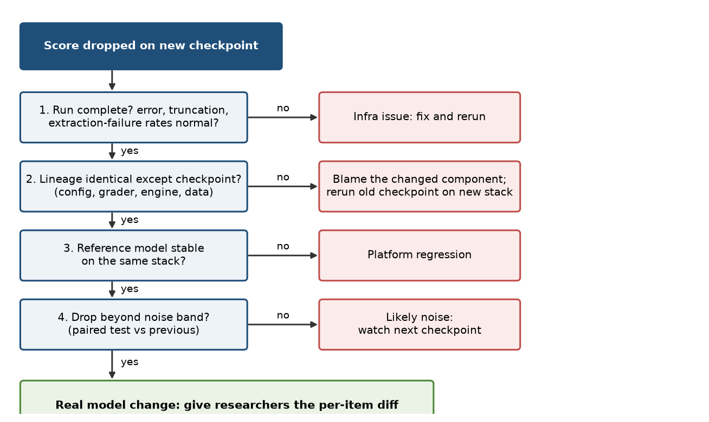

Eval study notes · Coding practice set
An eval platform needs monitoring, alerting and dashboards that detect evaluation degradation early, and on-call runbooks for when it happens. “Evaluation degradation” is a useful phrase to unpack in an interview, because it means two different things that are easy to conflate: the eval infrastructure getting worse (jobs failing, slowing, or silently producing wrong numbers) and the evaluation itself getting less meaningful (contamination, saturation, judge drift). A platform engineer owns the first and should instrument the second. This chapter is about how both show up, how to detect them, and how to triage an alert at 9am when a researcher says “the scores look weird”.
A researcher messages you: the latest checkpoint dropped six points on a coding benchmark overnight, while every other benchmark moved by less than one. They want to know whether to roll back the data change they made yesterday. What do you check first, and in what order? Think about it before reading on.
Infrastructure failures come in two kinds, and the dangerous kind is the quiet one.
Loud failures are the ones ordinary production monitoring catches: jobs that crash, hang, run out of GPU memory, cannot be scheduled, or time out; inference servers that fail health checks; storage that fills up; sandboxes that cannot start. These need the standard toolkit from any production system: job success rates, queue depth and wait times, resource utilisation, error logs, and alerts on each with sensible thresholds. They are visible, they page someone, and they get fixed.
Silent failures are the ones that make evaluation hard. The job succeeds, a number is produced, and the number is wrong. A short catalogue of the ones that happen in practice is worth having ready, because each suggests a specific detector.
Chat-template and tokenizer mismatches: a checkpoint is served with the wrong chat template, a missing beginning-of-sequence token, or a tokenizer from a different version, and the model runs but performs worse, sometimes by a lot on some benchmarks and not at all on others. Inference-engine changes: upgrading vLLM or changing a kernel or quantisation setting shifts numerics slightly, which changes greedy outputs on a fraction of items. Nondeterminism: the same request returns different outputs depending on what else was in the batch, because floating-point reductions are not associative and batch composition changes the reduction order. Thinking Machines Lab’s September 2025 post “Defeating Nondeterminism in LLM Inference” traced this to the lack of batch invariance in common kernels and showed it can be fixed at a real throughput cost (Chapter 4); in their test, 1,000 identical prompts to Qwen3-235B at temperature zero produced 80 distinct completions. Until a stack is batch invariant, “temperature zero” does not mean “deterministic”. Microsoft Research’s Eureka report (September 2024) found the same at the API level, with up to 26 percent disagreement between identical runs of one hosted model on one benchmark, and also found that new versions within the same model family regressed on some subcategories by more than 10 percent, which is why judge models must be pinned. Grader changes: an extractor regex or a judge model is updated and scores move with no change to the model. Silent truncation: a maximum-token limit cuts off long reasoning chains and they are scored as wrong. Sandbox infrastructure errors counted as test failures. Dataset drift: a benchmark is reloaded from a live source that has changed. And partial runs: a job that lost a shard reports accuracy over the items it completed, which may be a biased subset (often the short, easy ones).
Each of those silent failures has a detector, and together they form the monitoring design you would describe in an interview.
The most powerful single idea is a pinned reference model. Keep one fixed model checkpoint whose scores on every benchmark are well established, and evaluate it regularly (nightly, and on every change to the eval stack) through exactly the same pipeline as everything else. The reference model never changes, so any movement in its scores beyond its known noise band is, by construction, a change in the infrastructure: the engine, the grader, the data, the templates. This lets you answer the researcher’s question quickly. If the reference model also dropped on the coding benchmark overnight, the cause is the platform, not their data change.
The second idea is golden items and known-answer tests. For each grader, a set of answers that must be marked correct and a set that must be marked wrong, run on every grader change and periodically in production, catches extractor and judge regressions directly. For execution-based benchmarks, running the reference solutions through the sandbox catches environment rot.
The third is per-run health metrics beyond the score: the fraction of items with extraction failures, with truncation at the token limit, with infrastructure errors, with timeouts; the distribution of output lengths; the completion fraction of the run. A drop in score that coincides with a rise in truncation or extraction failures is almost certainly not a capability regression. A run that completed 9,400 of 10,000 items should not report a score at all, or should report it with a loud warning.
The fourth is statistical anomaly detection on scores over time, designed with Chapter 10 in mind. For each benchmark, the platform knows its run-to-run noise from repeated reference runs, and the typical checkpoint-to-checkpoint movement within a training run. An alert fires when a change is large relative to that noise, persistent across more than one checkpoint, or shared across many benchmarks at once (a sign of infrastructure, since a real capability change rarely moves everything together). This keeps alert volume low enough that people still read the alerts.
The fifth is lineage. Every result row records the config hash, grader version, engine version, dataset revision and code commit (Chapter 2), so when a score moves, the first diagnostic step is to diff the lineage between the two runs. If anything other than the model checkpoint differs, you have your first suspect.

Interviewers often ask for a time a measurement bug looked like a model regression. Your own story is best, but it helps to know the public canon, because referring to it shows you know the field. Four are worth having at your fingertips.
The three MMLUs (Hugging Face, June 2023). The Open LLM Leaderboard found that the original MMLU code, HELM and lm-evaluation-harness scored the “same” benchmark three different ways (letter probabilities, generated letter, full-answer likelihood), and that LLaMA-65B scored anywhere from 48.8 to 63.7 percent depending on the implementation, with model rankings changing. The lesson is that a benchmark name is not a benchmark; the config is.
The Llama 3.1 GSM8K gap (2024). Meta reported 84.5 for Llama 3.1 8B Instruct; community reproductions got 76.95. Applying the chat template, presenting few-shot examples as multi-turn conversation and using Meta’s prompt gave 85.4. Chat templates and duplicated beginning-of-sequence tokens are among the most common silent failures in open evaluation.
Partial runs (Epoch AI, December 2025). Epoch noted that one published SWE-bench Verified result was computed on 477 of 500 problems because of environment problems, and that scaffold choice alone moved SWE-bench scores by up to 11 points for one model and 15 for another, while API provider choice was the biggest source of variance for open models.
Anthropic’s production postmortem (September 2025). Three infrastructure bugs (a routing error, a TPU misconfiguration producing stray tokens, and a compiler bug in approximate top-k sampling) degraded Claude’s responses for some users over several weeks, and Anthropic wrote that its evaluations did not catch them, partly because models often recover from isolated mistakes. The remediations were more sensitive evals that distinguish working from broken implementations and quality evals run continuously against production. OpenAI’s sycophancy postmortem (May 2025) is the methodology counterpart: offline evals “generally looked good” because nothing measured the behaviour that regressed.
Put together, the answer to the opening question is an ordered checklist that goes from cheapest and most likely to most expensive. First check that the run is complete and that its health metrics are normal: completion fraction, error, truncation and extraction-failure rates, output-length distribution. Second, diff the lineage between this run and the last good one; if anything besides the checkpoint changed, rerun the previous checkpoint on the current stack to isolate the cause. Third, look at the reference model on the same stack. Fourth, apply the statistics: a paired comparison against the previous checkpoint, with the benchmark’s known noise band. Only then is it a model question, and at that point the most useful thing you can hand the researcher is the per-item diff: which items flipped from pass to fail, with the model’s outputs, so they can see whether the failures share a pattern. On a coding benchmark specifically, a drop isolated to one benchmark while others hold steady makes sandbox infrastructure the first suspect: look at the sandbox error rate and rerun the gold solutions.
Being on call for an eval platform differs from being on call for a user-facing service in one important way: the “users” are researchers whose time is extremely expensive and whose decisions are time-sensitive, and many incidents are not outages but doubts about whether a number is right. Good practice follows from that. Runbooks should cover the common silent failures above with their detectors and fixes, not only the loud ones. Incidents should have a clear owner and a status the researchers can see, because a team waiting on eval results for a promotion decision wants to know whether to wait or decide without them. Every incident whose root cause was a silent failure should end in a new automated detector, and that is the mechanism by which on-call load goes down over time. And when on-call follows the sun across time zones, handover notes matter: an incident in progress at 6pm in one time zone becomes someone else’s at their morning.
The second meaning of evaluation degradation is slower: a benchmark gradually stops measuring what it was meant to. Chapter 12 covers contamination and saturation. From the platform’s side the job is to instrument them so they are visible rather than discovered by accident: track each benchmark’s discriminative power (signal-to-noise across the models currently being compared), support date-filtered subsets for contamination checks, track judge-human agreement on calibration sets over time, and surface benchmarks whose scores have stopped moving. A dashboard of benchmark health, separate from the dashboard of model scores, is a concrete thing you could propose building in your first months.
Evaluation degradation means both infrastructure regressions and benchmarks losing meaning. Loud failures need standard production monitoring; silent failures, where a job succeeds with a wrong number, need specific detectors: a pinned reference model run through the same pipeline, known-answer tests for graders and gold solutions for sandboxes, per-run health metrics such as truncation and extraction-failure rates, noise-aware anomaly detection on scores, and full lineage on every result. Triage a surprising score in the order completeness, lineage, reference model, statistics, then model, and hand researchers the per-item diff. Turn every silent-failure incident into a new automated check, which is how on-call load falls.